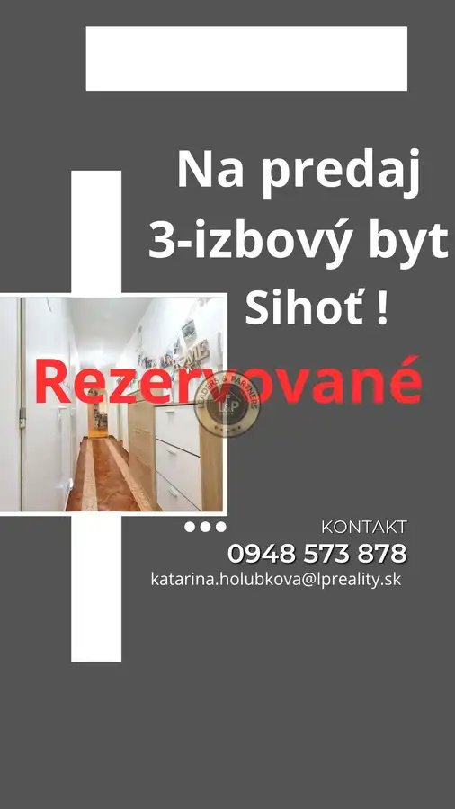

Na predaj: 3-izbový byt v Trenčíne – vyhľadávaná lokalita s kompletnou občianskou vybavenosťou
Trenčín

- Dispozícia3-izbový
- Plocha68 m²
- Poschodie1. z 8
- StavČiastočná rekonštrukcia
- VlastníctvoOsobné
O nehnuteľnosti
Leaders & Partners Vám ponúka na predaj priestranný 3-izbový byt o výmere 68 m² nachádzajúci sa na vyvýšenom prízemí bytového domu v jednej z najžiadanejších lokalít mesta Trenčín. 🟢 Základné informácie: Úžitková plocha: 68 m² Dispozícia: 3 nepriechodné izby, kuchyňa, kúpeľňa spojená s WC, chodba Poschodie: vyvýšené prízemie Čiastočná rekonštrukcia vrátane novej elektroinštalácie Lodžia – ideálna na oddych Bezpečnostné sklá na oknách Vstavané skrine – praktické riešenie úložného priestoru 🟢 Lokalita a občianska vybavenosť: Byt sa nachádza vo vyhľadávanej a pokojnej časti Trenčína s kompletnou občianskou vybavenosťou v pešej dostupnosti – školy, škôlky, potraviny, MHD, park a ihriská. 🟢 Výhody: Tiché a zelené prostredie Bezbariérový prístup (prízemie) Nízke mesačné náklady Vhodné pre rodiny aj ako investícia 📞 Kontakt: Pre viac informácií alebo dohodnutie obhliadky nás neváhajte kontaktovať: 📧 katarina.holubkova@lpreality.sk 📱 0948 573 878 💶 Cena: DOHODOU ✅ Pri rýchlom jednaní je dohoda o cene možná! V cene je zahrnutá provízia realitnej kancelárie a kompletný právny servis zabezpečovaný advokátskou kanceláriou. Chcete predať alebo kúpiť nehnuteľnosť? Chcete byť informovaní o každom podujatí vo Vašom meste? Potrebujete rýchlo vyhľadať firmu alebo službu vo Vašom okolí? Ak hľadáte spôsob, ako premeniť svoje mestské dobrodružstvá na úplne novú úroveň, tak vyskúšajte novú aplikáciu In The City https://www.inthecity.sk/registracia?kod=ITC2495
Parametre
- Cena vrátane energií
- Nie
- Druh
- 3 izbový byt
- Dátum zverejnenia
- 23. 06. 2026
- Energetický certifikát budovy
- nie je
- Podlažie
- 1
- Počet izieb / miestností
- 3
- Počet nadzemných podlaží
- 8
- Rok výstavby
- 1980
- Stav nehnuteľnosti
- Čiastočná rekonštrukcia
- Typ
- Predaj
- Typ konštrukcie
- Panelová
- Umiestnenie
- Zvýšené prízemie
- Vlastníctvo
- Osobné
- Vybavenie
- Verejné parkovanie, Výťah
- Úžitková plocha
- 68 m²